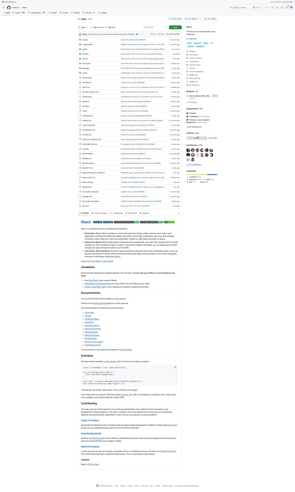
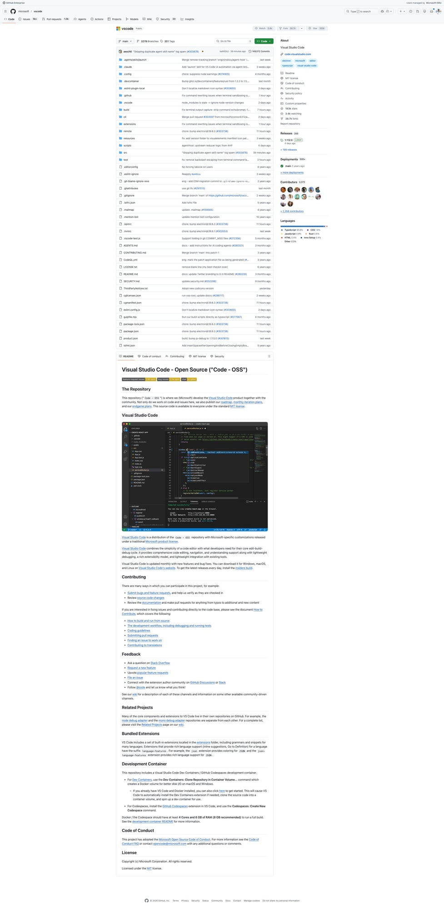
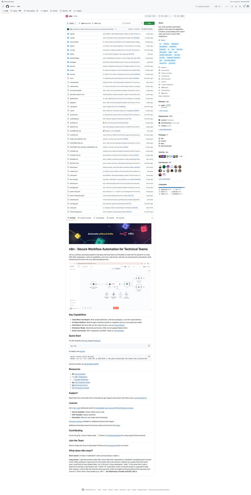
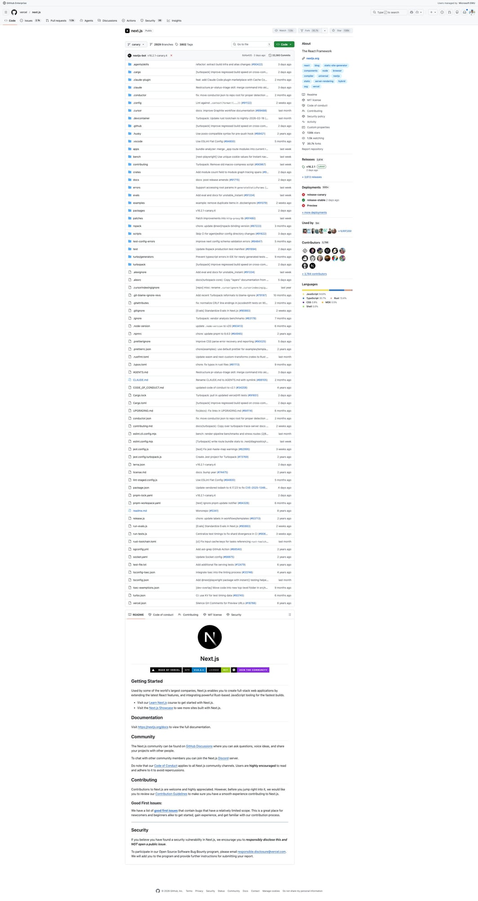
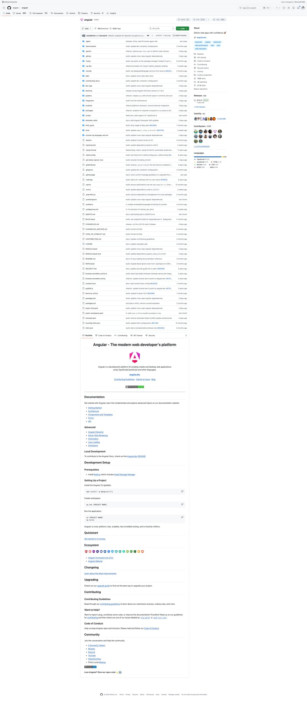

5个Agent Skills新星速报！React、Angular、Next.js 等顶级框架技能
Neo整理
Agent Skills 是 AI 编程助手（Claude Code、Codex、Gemini CLI 等）的可复用能力模块。今天我扫描了 SkillsMP 的 Development 和 Data & AI 分类，筛选出来自知名开源项目、实用价值高的热门 Skills。
本期介绍 5 个精选 Skills，涵盖 React 错误处理、VSCode 架构、n8n 自动化、Next.js 特性开关和 Angular 开发指南。
Extract Errors：React 错误码管理
Extract Errors Skill 来自 Facebook 的 React 官方仓库，用于管理 React 的错误消息编码系统。当你向 React 添加新错误消息或遇到"unknown error code"警告时自动激活。
💡 核心价值：React 在生产构建中使用错误码替代完整错误消息以减小包体积。这个 Skill 确保新增的错误都有正确的编码映射。
使用方法：
- 运行提取 —
yarn extract-errors自动扫描代码中的错误消息 - 检查编码 — 确认所有新增错误都被分配了唯一编码
- 生产安全 — 保持错误码映射表与源码同步
# 使用流程
yarn extract-errors
# 检查输出
- 新错误会被自动分配编码
- 确认 codes.json 已更新
- 生产构建将使用编码替代完整消息
Sessions：VSCode Agent Sessions 窗口架构
Sessions Skill 是 Microsoft VSCode 团队的内部开发指南，详细说明了 Agent Sessions 窗口的架构设计——VSCode 从"编辑器优先"到"对话优先"的重大转型。
💡 核心价值：理解 VSCode Agent Sessions 的分层架构。vs/sessions 可导入 vs/workbench，但反向禁止。Chat Bar 成为主要 UI 组件。
架构要点：
- 分层约束 —
vs/base → vs/platform → vs/editor → vs/workbench → vs/sessions - 简化 Chrome — 无活动栏、状态栏、横幅，聚焦对话体验
- 规范文档 — README.md（分层）、LAYOUT.md（网格）、AI_CUSTOMIZATIONS.md
- 延迟创建 — Session 在用户发送第一条消息时才真正创建
# 规范文档位置
src/vs/sessions/README.md # 分层规则
src/vs/sessions/LAYOUT.md # 网格结构、CSS 类
src/vs/sessions/AI_CUSTOMIZATIONS.md # AI 自定义
src/vs/sessions/browser/widget/AGENTS_CHAT_WIDGET.md # Chat Widget
# 验证分层
npm run valid-layers-check
n8n Conventions：自动化工作流开发规范
n8n Conventions Skill 是 n8n 自动化平台的开发速查卡。n8n 是 Zapier/Make 的开源替代品，拥有 180k+ Stars，这个 Skill 帮你快速了解代码规范和最佳实践。
💡 核心价值：在 AI 编程助手中快速查阅 n8n 的 TypeScript 规范、错误处理、前后端架构，避免踩坑。
关键规则：
- TypeScript — 禁止
any，用unknown；优先satisfies而非as - 错误处理 — 使用
UnexpectedError，废弃ApplicationError - 前端 — Vue 3 Composition API +
<script setup lang="ts"> - 后端 — Controller → Service → Repository，依赖注入
- 数据库 — 仅 SQLite/PostgreSQL
# 错误处理示例
import { UnexpectedError } from 'n8n-workflow';
throw new UnexpectedError('message', { extra: { context } });
# 完整文档
/AGENTS.md # 架构、命令、工作流
/packages/frontend/AGENTS.md # CSS 变量、动画时间
# 测试
pushd packages/cli && pnpm test
Flags：Next.js 实验性特性开关全流程
Flags Skill 来自 Vercel 的 Next.js 仓库，是添加或修改框架实验性特性开关的端到端指南。当你编辑 config-shared.ts、config-schema.ts 等核心配置文件时自动激活。
💡 核心价值：理解 Next.js 特性开关从类型声明 → Zod Schema → 构建时注入 → 运行时环境变量的完整链路，避免遗漏环节。
关键流程：
- 必须布线 —
config-shared.ts（类型）→config-schema.ts（Zod 校验） - 客户端代码 — 通过
define-env.ts构建时注入即可 - 运行时代码 — 需在
next-server.ts+export/worker.ts设置环境变量 - 独立 Bundle — 大型特性可选择独立构建变体，消除死代码
# 特性开关布线路径
config-shared.ts → 类型声明
config-schema.ts → Zod 校验
define-env.ts → 构建时注入（客户端）
next-server.ts → 运行时环境变量
export/worker.ts → 静态导出运行时
# 决策：运行时 env 分支 vs 独立 bundle
- 简单特性 → 运行时 env 分支（一个 bundle）
- 大型特性 → 独立 bundle 变体（消除死代码）
Angular Developer：官方开发指南与架构规范
Angular Developer Skill 是 Google Angular 团队官方提供的开发指南（MIT 许可），覆盖 Angular 的方方面面：响应式 Signals、表单、依赖注入、路由、SSR、无障碍、动画、样式、测试和 CLI 工具。
💡 核心价值：自动分析项目 Angular 版本，提供对应的最佳实践。v21+ 推荐 Signals Forms，生成代码后自动运行 ng build 验证。
技能亮点：
- 版本感知 — 根据项目版本自适应指南（v15 到 v21+）
- Signals 优先 — linkedSignal、resource 等现代响应式 API
- 自动验证 — 生成代码后强制
ng build确保无错误 - CLI 集成 — 通过 Angular CLI 脚手架保持代码一致性
- SSR/Hydration — 服务端渲染和增量水合指南
# 新项目创建（自动检测 CLI 安装）
ng new my-project # 本地已安装
npx @angular/cli@15 ng new ... # 指定版本
# 覆盖领域
- Signals / linkedSignal / resource（响应式）
- Signals Forms（v21+）
- 依赖注入、路由、SSR
- ARIA 无障碍、动画、Tailwind CSS
- 测试与 CLI 工具
总结
今天介绍的 5 个 Skills 全部来自顶级前端/全栈框架（React、VSCode、n8n、Next.js、Angular），代表了 Agent Skills 生态中最有价值的一类——官方项目内建的开发指南：
- 错误管理型 — React Extract Errors（生产错误码映射）
- 架构规范型 — VSCode Sessions（分层架构）、n8n Conventions（全栈规范）
- 开发指南型 — Next.js Flags（特性开关全链路）、Angular Developer（官方最佳实践）
这些 Skills 的共同特点：由框架维护者编写，与代码同仓库维护，保持实时同步。使用 AI 编程助手贡献这些项目时，Skills 能让 AI 理解项目特有的规范和约定。